ページ内リンク ウディコンとは？ / ご案内 / 各年の結果発表 / 体験コーナー / 運営からの感謝の言葉
◆ WOLF RPGエディターコンテスト（ウディコン）とは？
『ウディコン』は、Windows用ソフトウェアである『WOLF RPGエディター（ウディタ）』製のゲームを対象にした年一回開催のコンテストです。
主催はWOLF RPGエディターの開発者、SmokingWOLF（スモーキングウルフ）です。
本コンテストでは、参加者による自由な発想と情熱により、多くの名作が生まれてきました。
『WOLF RPGエディター』は2008年に正式公開され、『ウディコン』はその翌年の2009年からスタート。以降、毎年7～8月頃に開催され、夏のフリーゲームの祭典として多くのユーザーに親しまれてきました。
コンテストは第3回までは「審査員審査＋一般投票」の混合形式で行われ、第4回以降は「一般投票のみ」に移行。すべてのプレイヤーの声が評価に直結する、プレイヤー参加型のコンテストとなっています。
このページでは、そんな『ウディコン』の記録が長く残ることを願って、毎年の結果発表ページが資料として保管されています。
作り手と遊び手、すべての参加者の情熱が詰まった記録の数々──
そのあふれる熱量の跡を、どうぞごゆっくりお楽しみください。
◆ ご案内
●このページは、歴代ウディコンの結果発表などをまとめたアーカイブサイトです。
主に、バックアップされた結果発表ページをご覧いただけます。
●以後のページ中のリンクには【赤：外部リンク】【緑：ページ内】【青：当サイト内】の色分けがあります。
赤リンクは特に注意してください（ブラウザの警告が出ることがあります、その場合は開かないで下さい）。
●年ごとの詳細な順位・全エントリー作品・投票コメントなどは、各結果発表ページをご覧ください。
◆ 各年のコンテスト結果発表
ここからは、毎年のウディコンの熱気と記録が詰まった結果発表ページをご覧いただけます。このページ内では「1位～3位」作品、または「僅差の上位作品」を抜粋して紹介していますが、それ以外の全作品と投票コメントも、各結果ページ内にて閲覧可能です。
●【一部ゲームデータはダウンロード可能です】
このページで紹介されている上位作品のゲームデータは、各「結果発表ページ」内の作品詳細の【運営バックアップからDL】リンクよりダウンロードすることが可能です。
●【当時のページに興味がある方へ】
ウディコン開催当時の公式サイト（ https://silversecond.com/WolfRPGEditor/Contest/ ）の内容は、『インターネットアーカイブのWayback Machine』(別ｳｨﾝﾄﾞｳ)より一部閲覧可能です。
（現在のsilversecond.comドメインが有害なサイトに使われている可能性を考え、直接リンクはしていません。
これに限らず、赤色の外部リンクURLを開く際はご注意ください）
第17回コンテスト 2025年開催
クリックで結果発表ページへ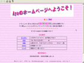 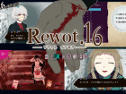
優勝作品『Ayaのホームページへようこそ！』183.9点 作：苺いちえ
準優勝『Rewot.16ーリワット イチロクー』177.9点 作：植物の灰
第３位『Go Down, B-Girl!』163.0点 作：なす太郎
■運営者の記事 → 第17回ウディコン上位3作品紹介+個人ピックアップ(新ウィンドウ)
第16回コンテスト 2024年開催
クリックで結果発表ページへ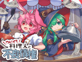 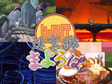 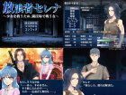
優勝作品『箱庭ドールメーカー』176.7点 作：こよる
準優勝『やけくそ料理人と不良債権』168.7点 作：なす太郎
第３位『迷宮郷まよろば』163.2点 作：そぞろ豆腐
第４位『放浪者セレナ～少女を救うため、闘技場で戦う女～』160.8点 作：カザ＆ソロー
■運営者の記事 → 第16回ウディコン上位4作品紹介+個人ピックアップ(新ウィンドウ)
→ ウディコン：ゲームコンテストの裏側と改善の歴史(新ウィンドウ)
第15回コンテスト 2023年開催
クリックで結果発表ページへ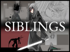 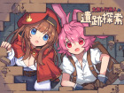 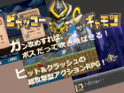
優勝作品『SIBLINGS』188.3点 作：九乃頭虫（ここのずむし）
準優勝『文無し行商人の遺跡探索』163.7点 作：なす太郎
第３位『不屈のスペラ』158.5点 作：テイク
第４位『ビャッコーギャモン』157.9点 作：こげ（ヒワイロボ）
■運営者の記事 → 第15回ウディコン上位4作品紹介+個人ピックアップ(新ウィンドウ)
第14回コンテスト 2022年開催
クリックで結果発表ページへ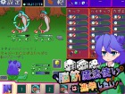 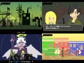 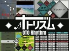
優勝作品『脳筋魔法使いは進学したい』166.4点 作：なす太郎
準優勝『雲間からレグルス』162.3点 作：SEPTET
第３位『メトロノームファイト』142.5点 作：二六千里
第４位『天上奥義伝』142.2点 作：LAKO
第５位『オトリズム』140.1点 作：ひげ
■運営者の記事 → 第14回ウディコン上位3作品+ピックアップ紹介(新ウィンドウ)
第13回コンテスト 2021年開催
クリックで結果発表ページへ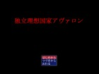 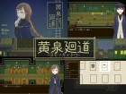
優勝作品『銀竜奥義伝』162.8点 作：LAKO
準優勝『色は黒に包まれて』154.3点 作：すたーあいす＊
第３位『独立理想国家アヴァロン』145.5点 作：CUSTOM BRAIN
第４位『黄泉廻道』142.7点 作：戸塚
■運営者の記事 → 第13回ウディコン上位3作品+ピックアップ紹介(新ウィンドウ)
第12回コンテスト 2020年開催
クリックで結果発表ページへ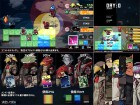 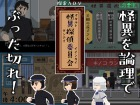 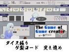 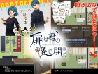
優勝作品『DAY:0』151.7点 作：PANO
準優勝『怪異探偵委員会』148.6点 作：茸沢しめじ
第３位『ゲー製ゲーム』147.8点 作：南天
第４位『扉は君の鍵で開く』147.0点 作：暗闇行灯
■運営者の記事 → 第12回ウディコン上位4作品+ピックアップ紹介(新ウィンドウ)
第11回コンテスト 2019年開催
クリックで結果発表ページへ
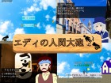 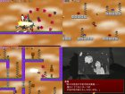 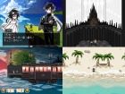
優勝作品『エディの人間大砲』170.7点 作：Dot蜥蜴
準優勝『ヴァーミリオンの青空』146.2点 作：秋月ねこ柳
第３位『PRESS START』143.4点 作：初
■運営者の記事 → 第11回ウディコン上位3作品+ピックアップ紹介(新ウィンドウ)
第10回コンテスト 2018年開催
クリックで結果発表ページへ
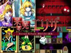 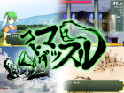 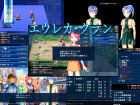
優勝作品『未完のエリザ』175.0点 作：ナイデン内田
準優勝『コトダマッスル』174.3点 作：ダブリス竈
第３位『エウレカ・クラン』147.5点 作：カザ＆ソロー
■運営者の記事 → 第10回ウディコン上位3作品紹介(新ウィンドウ)
第９回コンテスト 2017年開催
クリックで結果発表ページへ
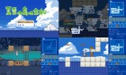 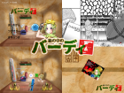 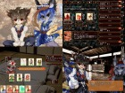 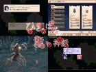
優勝作品『夏雲の島の宝船』166.4点 作：halky
準優勝『箱の中のバーディ』163.8点 作：おぬ原晃
同率３位『夢遊猫イミテイション』163.7点 作：明野＆a
同率３位『ひとりぼっちの竜の神話』163.7点 作：仔竜
■運営者の記事 → 第9回ウディコン上位3作品紹介(新ウィンドウ)
第８回コンテスト 2016年開催
クリックで結果発表ページへ
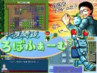 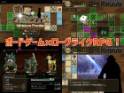 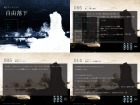 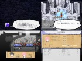
優勝作品『収穫機道ろぼふぁーむ』168.5点 作：ぴけ
準優勝『箱庭フロンティア』162.7点 作：こよる
第３位『電子ゲームブック 自由落下』153.0点 作：なべのひと＆ＭＡ－ＧＵＮ
第４位『ウルファールのサンプルゲーム(仮)』150.9点 作：ハトヤ
■運営者の記事 → 第8回ウディコン上位3作品紹介(新ウィンドウ)
第７回コンテスト 2015年開催
クリックで結果発表ページへ
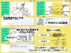 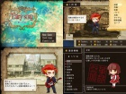 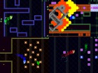

優勝作品『キャンディリミット』168.5点 作：sunori
準優勝『fairy song ～歌う革命～』142.8点 作：じゃ。
第３位『WALL+ACCELERATION』140.0点 作：kinokaze
第４位『AME CHAMP』136.9点 作：リド・カイン
■運営者の記事 → 第7回ウディコン上位3作品紹介(新ウィンドウ)
第６回コンテスト 2014年開催
クリックで結果発表ページへ
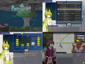 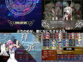 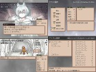
優勝作品『RainyTower』174.0点 作：標準誤差StR
準優勝『召喚指揮候補生』162.6点 作：早川 雪子
第３位『ロードライト・フェイス』153.2点 作：ud
■運営者の記事 → 第6回ウディコン上位3作品紹介(新ウィンドウ)
第５回コンテスト 2013年開催
クリックで結果発表ページへ
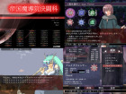 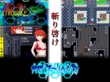 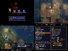
優勝作品『帝国魔導院決闘科』181.9点 作：早川 雪子（川崎部）
準優勝『アクアリウムス』177.2点 作：クリロウ
第３位『影明かし』155.7点 作：Foomal
第４回コンテスト 2012年開催
クリックで結果発表ページへ
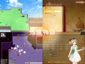 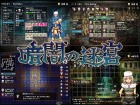 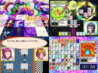 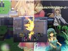
優勝作品『悠遠物語～空の大陸とアイテム屋さん～』188.0点 作：らむらむ
準優勝『暗闇の迷宮』170.1点 作：あとらそふと
第３位『COSMOSカードゲーム』157.1点 作：佑り (げーむふぁくとりぃ)
第４位『ダンジョンズ・オブ・アドヴェンチャラーズ!』156.8点 作：皐月紫龍
第５位『Princess Saviour』153.5点 作：あなす
第３回コンテスト 2011年開催
クリックで結果発表ページへ
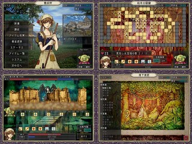 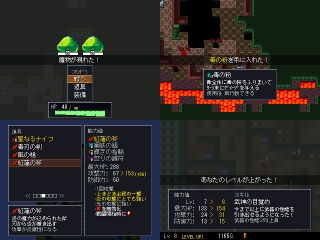 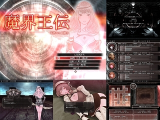
優勝作品『マッドプリンセス ～ディオデラの野望～』作：あとらそふと
準優勝『武神の目覚め』作：Foomal
第３位『魔界王伝Ⅱ－異界の十二騎士－』作：メガネ
第２回コンテスト 2010年開催
クリックで結果発表ページへ
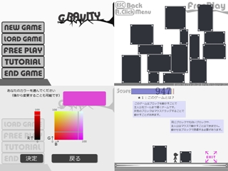 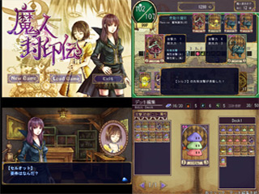 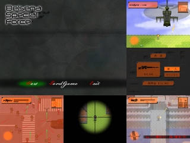
優勝作品『Gravity』作：ぽり０６５５
準優勝『魔人封印伝』作：あとらそふと
第３位『Belsena Special Force』作：Laineus
第１回コンテスト 2009年開催
クリックで結果発表ページへ
優勝作品『魔界王伝』作：メガネ
準優勝『Final war to invite Freedom』作：FlowingWind
第３位『SteelRabbit』作：標準誤差StR
◆体験コーナー
ここでは開催時の作品エントリーや一般投票の様子を体験できます。『作品エントリー体験コーナー』
こちらは年に1週間しか開放されなかった、作品エントリーフォームの体験コーナーです。
かつて作品を応募できたあの1週間を、少しだけ体験できます
（エントリー体験は再現シミュレーションです、「送信」しても何も送られません）
『一般投票体験コーナー』
こちらは作品への一般投票を体験できるコーナーです。
一般投票は、一時保存した内容を維持したまま、次回も続けて入力ができるようになっていました。
審査期間中はこの投票ページから、日々作品ごとに細やかな評価が行われてきたのです。
（投票体験は再現シミュレーションです。本当に投票されるわけではありません）
『当時の応募・審査・規約説明ページ』
こちらは当時のウディコンのルールについて記載されたページです。
長年かけて作り上げられてきたこれらのルールが、
いつかまたコンテストを開く人の参考になることを願っています。
◆ 運営からの感謝の言葉
このページをここまでご覧くださったすべての方へ。もしかしたら、この中のどこかに――
ウディコンに投稿してくださったあなたの作品や、あるいはあなたの投票コメントがあるかもしれません。
もしそうでしたら、長年にわたるご参加、ご投票、ご感想、そして応援、本当にありがとうございました。
ウディコンは、まさに皆さまの情熱に支えられてここまで歩んでくることができました。
すべての素晴らしい出会いと関わりに、心から感謝いたします。
そしてここからは、私の個人的なお話です。
結果発表の夜。
10分ごとに順位が一つずつ発表されていく、あの緊張感あふれる時間は、
私にとって、ずっと忘れられない特別な記憶となっています。
作品参加された皆さまからの悔しさ、喜び、感謝。
そして、「十分すぎるほど上位だったのに、まだもっと上を取りたかった」と語る複雑な気持ち……
そういった多くの感情が、毎年、SNS上にあふれ出していました。
主催として、そこまで真剣に一喜一憂してくださった皆さまに、感謝の念は尽きません。
でもゲーム開発者である自分としては、一生懸命になってしまうその気持ちも分かるつもりです。
だって、作られたゲームはまちがいなく、その人の『魂の結晶』なのですから。
そしてまた、もしこのコンテスト自体も、誰かの思い出にいつまでも残るような
楽しい遊び場として存在できていたのなら……
主催者として、そしてひとりのゲーム開発者として、これほど幸せなことはありません。
運営である私にとってもまた、ウディコンはいくらかの命を割いてみんなと一緒に作り上げた、
まぎれもない『魂の結晶』であり、『ゲーム』の一つなのですから。
もし、あなたがこの文章を読んでいるときにウディコンがすでに幕を下ろしていたとしても……
きっとまた、どこかで、わくわくするゲームのお祭りは続いているはずです。
ウディコンが、そのバトンのひとつになれていたなら、
私にとって、これ以上に幸いなことはありません。
ウディコンを楽しんでくださったすべての皆さまへ。
重ね重ね、これまで本当にありがとうございました。
そして今、こうしてこの記録をたどってくださっているあなたにも、心より深い感謝を。
この記録が、また誰かの「創作の炎」につながることを願って。
ウディコン運営 SmokingWOLF より